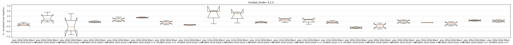

nothing looked strongly above zero most of the time
tuner_plex.py --tune-timeout 500 --num-threads 10 --num-iterations 30 --tune-time-span-days 122 --plex-skip 183 --window 0.80 --fund-set ALCOHOL --start-date 2018-01-01 --end-date 2018-06-30 --results-file runs/batch_test--2021-10-15--150000/155523_tuner_plex--122d-183d--80pct--ALCOHOL--2018-Q1Q2_results.json_or_yaml --sqlite-file palloc.sqlite
palloc_tuner --dstock-cfg runs/run_3219651_183_1634396755.468023/2018-06-30--2017-08-30--seed--dstock_cfg.yaml --fund-set SP500 --dstock-use-seed --start-date 2017-08-30 --end-date 2018-06-30 --opentuner-db-name 2021-10-16--110557--2018-06-30--2017-08-30 --time-lane first-rash-time --num-threads 10 --num-iterations 30 --window 0.80
last note
dstock test report for fundset_finder
Super Set: None
Fund Set: ALCOHOL
Group: The Universal Group, Version: 3.2.2
min duration
0:10:33
avg duration
0:15:37
max duration
0:22:26
Fund Set: BOOMERS
Group: The Universal Group, Version: 3.2.2
min duration
0:09:44
avg duration
0:14:31
max duration
0:20:50
Fund Set: SCHMOO
Group: The Universal Group, Version: 3.2.2
min duration
0:10:15
avg duration
0:15:41
max duration
0:22:29
Fund Set: SP500
Group: The Universal Group, Version: 3.2.2
min duration
0:09:46
avg duration
0:14:32
max duration
0:20:53
Fund Set: TESTFUNDS
Group: The Universal Group, Version: 3.2.2
min duration
0:10:40
avg duration
0:16:09
max duration
0:23:15
Fund Set: UNCORRELATED
Group: The Universal Group, Version: 3.2.2
min duration
0:11:36
avg duration
0:17:32
max duration
0:25:58
Fund Set: VFUNDS
Group: The Universal Group, Version: 3.2.2

min duration
0:10:39
avg duration
0:15:42
max duration
0:22:26